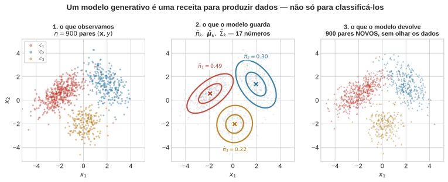
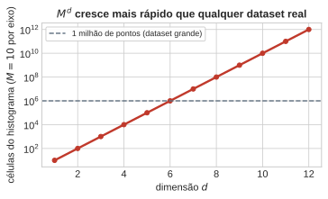
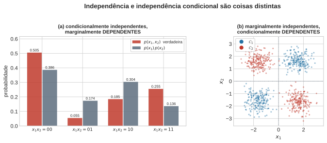
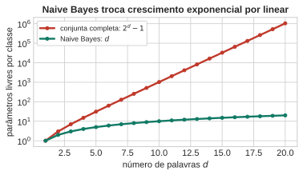
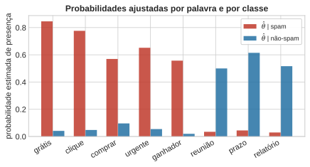
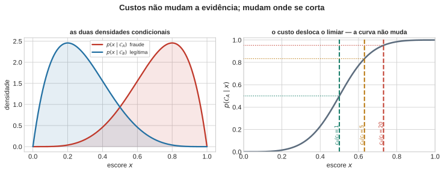
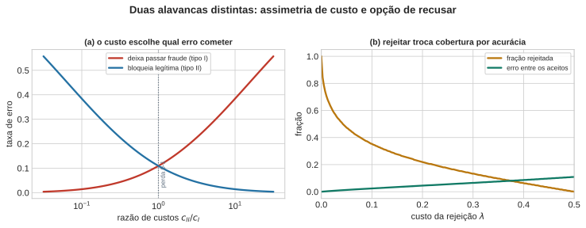

flowchart TD
C(("𝒞ₖ")) --> x1["x₁ (#quot;grátis#quot;)"]
C --> x2["x₂ (#quot;reunião#quot;)"]
C --> x3["x₃ (#quot;urgente#quot;)"]
C --> xd["x_d"]


Aula 2 — Fundamentos Estatísticos do Aprendizado Supervisionado
2026-08-19
Generaliza sem atrito para \(K\) classes:
\[ p(\mathcal{C}_k \mid \mathbf{x}) = \frac{p(\mathbf{x}\mid\mathcal{C}_k)\,\pi_k}{\sum_j p(\mathbf{x}\mid\mathcal{C}_j)\,\pi_j} \]
Regra ótima: \(\arg\max_k p(\mathbf{x}\mid\mathcal{C}_k)\,\pi_k\) — a prova da Aula 1 nunca usou \(K=2\).
Para calcular \(p(\mathcal{C}_k\mid\mathbf{x})\) você precisa de \(\pi_k\) e \(p(\mathbf{x}\mid\mathcal{C}_k)\). Juntos, eles são mais que um classificador — são uma receita executável:
Já havendo estimado os dados. Duas chamadas ao gerador aleatório, na ordem. Um modelo assim se chama generativo porque dele se pode gerar.

Regressão logística (Aula 6) modela \(p(\mathcal{C}_k\mid\mathbf{x})\) direto — nunca constrói \(p(\mathbf{x}\mid\mathcal{C}_k)\).
Pergunte a ela: “me dê um \(\mathbf{x}\) plausível da classe 2”.
A pergunta não faz sentido — ela nunca representou como \(\mathbf{x}\) se distribui.
Discriminativo decide. Generativo decide e sonha.
| esta aula | modelo moderno | |
|---|---|---|
| condição | \(\mathcal{C}_k \sim \pi_k\) | prompt / latente |
| gera | \(\mathbf{x}\in\mathbb{R}^2\) | imagem, tokens |
| \(p(\mathbf{x}\mid\cdot)\) | gaussiana, 5 params | rede, \(10^9\)+ params |
Mudou a família de distribuições, não o conceito. E precisa de bilhões de parâmetros porque \(\mathbf{x}\) tem dimensão altíssima — o problema do histograma, de novo.
Bayes para \(K\) classes e modelos generativos
Julgue V ou F — a questão só conta se acertar os 4 itens:
Bayes para \(K\) classes e modelos generativos — Resposta
O que muda entre um modelo generativo gaussiano de 5 parâmetros e uma IA generativa moderna com bilhões — o conceito, ou só a família de distribuições?
(Uma frase. Compare com um colega antes de avançar.)
\[ p(\mathcal{C}_k\mid x) = \frac{p(x\mid\mathcal{C}_k)\,\pi_k}{\sum_j p(x\mid\mathcal{C}_j)\,\pi_j} \;\Longrightarrow\; \arg\max_k \; p(x\mid\mathcal{C}_k)\,\pi_k \]
Vamos supor que você tente estimar \(p(\mathbf{x}\mid\mathcal{C}_k)\) do jeito mais ingênuo possível: um histograma multidimensional. Divida cada um dos \(d\) eixos em \(M\) células.
| \(d\) | células | pontos/célula (\(n=10^6\)) |
|---|---|---|
| 1 | \(10\) | \(100\,000\) |
| 3 | \(10^{3}\) | \(1\,000\) |
| 6 | \(10^{6}\) | \(1\) |
| 10 | \(10^{10}\) | \(0{,}0001\) |

“Faltam dados” é o mesmo problema que “falta poder computacional”?
Comprar 100× mais GPUs resolveria?
(Uma frase. Compare com um colega.)
Observar \(x_j\) não altera em nada a crença sobre \(x_i\).
Uma vez conhecido \(z\), observar \(x_j\) não acrescenta nada de novo.
\(x_j\) pode ser muito informativa sobre \(x_i\) — mas toda essa informação já está em \(z\).
As duas não são a mesma coisa
(a) “Grátis” e “ganhador”, cond. independentes dada a classe. Marginalizando: \(p(1,1) = 0{,}255\) vs. \(0{,}44 \times 0{,}31 = 0{,}136\).
Dependentes no corpus — a classe é causa comum.
(b) \(x_1, x_2\) moedas independentes, \(\mathcal{C} = x_1 \oplus x_2\).
Dado \(\mathcal{C}=1\): \(x_2 = 1 - x_1\). Condicionar criou dependência.

\[ p(\mathbf{x}\mid\mathcal{C}_k) = \prod_{i=1}^{d} p(x_i\mid\mathcal{C}_k) \]
\[ \arg\max_k \; \pi_k \prod_{i=1}^{d} p(x_i\mid\mathcal{C}_k) \]
Este é o Naive Bayes. O adjetivo é justo — e o resto da aula é sobre o que se perde.
Spam: \(\mathbf{x}\in\{0,1\}^d\), presença/ausência de \(d\) palavras.
Sem estrutura: \(2^d-1\) parâmetros por classe. Com \(d=20\): mais de 1 milhão.
Naive Bayes — independência condicional dada a classe: \[ p(\mathbf{x}\mid\mathcal{C}_k) = \prod_{i=1}^d p(x_i\mid\mathcal{C}_k) \]

flowchart TD
C(("𝒞ₖ")) --> x1["x₁ (#quot;grátis#quot;)"]
C --> x2["x₂ (#quot;reunião#quot;)"]
C --> x3["x₃ (#quot;urgente#quot;)"]
C --> xd["x_d"]

Mesma armadilha da Aula 1: palavra nunca vista numa classe \(\Rightarrow\) \(\hat\theta=0 \Rightarrow \ln 0 = -\infty\). Correção: suavização de Laplace (\(+1\) no numerador, \(+2\) no denominador).
Decisão: comparar \(\log\dfrac{p(\text{spam}\mid\mathbf{x})}{p(\text{não-spam}\mid\mathbf{x})}\) contra zero — uma soma de termos, um por palavra.
Escolha: para cada atributo \(i\), uma família \(\mathcal{F}_i\) para \(p(x_i\mid\mathcal{C}_k)\).
Treino
Predição
| atributo | família | por classe |
|---|---|---|
| binário | Bernoulli | 1 prob. |
| categórico (\(M\) níveis) | Categórica | \(M-1\) |
| contagem | Multinomial | taxa/termo |
| contínuo, forma conhecida | Gaussiana 1-D | \(\mu_{ik}, \sigma^2_{ik}\) |
| contínuo, forma livre | histograma / KDE | \(M\) contagens |
Famílias diferentes por coluna são permitidas — idade, estado civil e “tem cartão” convivem. O passo 3 soma os logs indiferentemente.
Independência e Naive Bayes
Julgue V ou F — a questão só conta se acertar os 4 itens:
Independência e Naive Bayes — Resposta
Dê um exemplo de par de atributos em que a independência condicional do Naive Bayes parece particularmente errada — e outro em que parece razoável
(Compare os dois exemplos com um colega.)
Regra \(\delta:\mathbf{x}\mapsto a\in\mathcal{A}\) (espaço de ações, não necessariamente de classes). Perda \(L(k,a)\).
\[ \rho(a\mid\mathbf{x}) = \sum_k L(k,a)\,p(\mathcal{C}_k\mid\mathbf{x}) \]
\[ \delta^\star(\mathbf{x}) = \arg\min_{a} \rho(a\mid\mathbf{x}) \]
Divisão de trabalho: o modelo dá a posteriori, a perda vem de fora, \(\delta^\star\) combina as duas.
\(\rho(A\mid\mathbf{x}) = c_{\mathrm{II}}\,p(\mathcal{C}_B\mid\mathbf{x})\), \(\quad\rho(B\mid\mathbf{x}) = c_{\mathrm{I}}\,p(\mathcal{C}_A\mid\mathbf{x})\)
\[ \text{decida } A \iff p(\mathcal{C}_A\mid\mathbf{x}) > \frac{c_{\mathrm{II}}}{c_{\mathrm{I}}+c_{\mathrm{II}}} \]
O limiar depende só de custos e prioris — nunca de \(\mathbf{x}\).
Só a razão importa: dobrar os dois custos não muda nada.
A curva \(p(\mathcal{C}_A\mid x)\) é o que o modelo sabe — ela não se move.
O que se move é o corte:
\(c_{II}/c_I = 1 \Rightarrow t = 0{,}50\) \(\quad\cdot\quad\) \(= 5 \Rightarrow t = 0{,}83\) \(\quad\cdot\quad\) \(= 20 \Rightarrow t = 0{,}95\)
“O modelo está bom?” é sobre a curva. “Onde cortar?” é sobre custos — e isso não está nos dados.

Nenhum limiar reduz os dois erros ao mesmo tempo.
As duas curvas se cruzam em \(c_{II}/c_I = 1\): a perda 0-1.
Ou seja: usar acurácia é declarar que os dois erros custam o mesmo.
Quase nunca custam.
| consequência | ordem | |
|---|---|---|
| \(c_{\mathrm{I}}\) deixa passar fraude | valor transacionado | R$ 800 |
| \(c_{\mathrm{II}}\) bloqueia legítima | atendimento + churn | R$ 40 |
Razão \(0{,}05 \Rightarrow t \approx 0{,}048\): bloqueie com pouca evidência.
Custos não são estimáveis dos dados — são declaração sobre consequências.
Difícil fixar? Reporte o sistema para toda a faixa de \(t\) e deixe a escolha explícita.

\[ R^\star = \mathbb{E}_{\mathbf{X}}\!\left[\min_{a} \rho(a\mid\mathbf{X})\right] \]
Generaliza o erro de Bayes para perda arbitrária — dado o modelo verdadeiro.
Ótima se a posteriori estiver certa. Naive Bayes erra a posteriori e decide bem mesmo assim.
Otimalidade da regra e correção do modelo são perguntas separadas.
E a lacuna aparece justamente quando os custos ficam assimétricos: aí o limiar sai de \(0{,}5\) e passa a depender do valor da posteriori.
Teoria da decisão e risco de Bayes
Julgue V ou F — a questão só conta se acertar os 4 itens:
Teoria da decisão e risco de Bayes — Resposta
Naive Bayes decide a estrutura antes dos dados. Árvores: nenhuma suposição sobre a densidade, divisões construídas gulosamente — inclusive as interações que o naive descartou. O preço da liberdade é o assunto de lá.
UNICAMP — Instituto de Computação